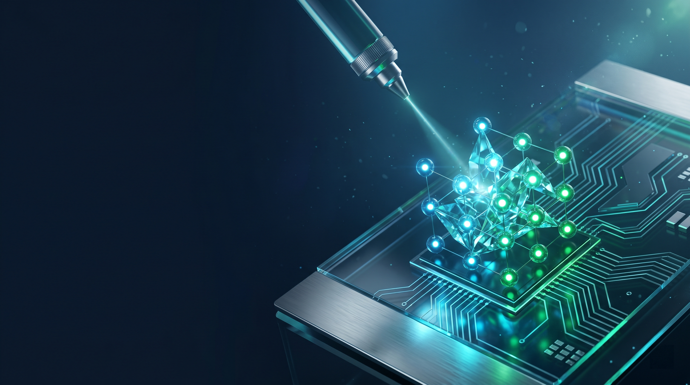
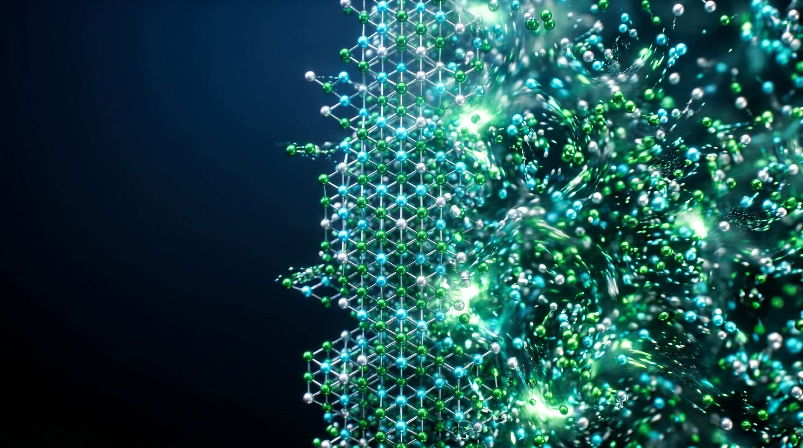

Conventional electron microscopy requires high vacuum, making it impossible to observe liquid-phase reactions in real-time. We are developing advanced Liquid Cell TEM (LCTEM) holders and chips that encapsulate liquid samples between electron-transparent windows (e.g., Graphene or SiN).

As semiconductor devices scale down to the limit, atomic precision is required. We investigate the processing of electronic materials in liquid environments at the atomic scale, utilizing the electron beam not just for imaging, but as a tool for fabrication.
Our research reveals the structure-property relationships of micro/nano electronic devices, focusing on:

Building on Prof. Zhang's recent work in Nature, we explore the synthesis mechanism of High-Entropy Alloys (HEAs) via isothermal solidification. We aim to control the mixing entropy and phase stability to create materials with unprecedented mechanical and catalytic properties.
Additionally, we study the dynamics of electrified solid–liquid interfaces, providing visual evidence for double-layer theories.
Supported By